Sunset Clouds Over 495
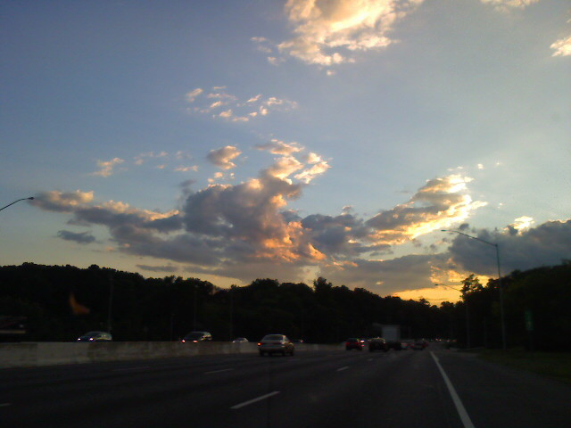
Kristina and I are heading to the Apple Store in the Montgomery Mall to pick up her iMac. It was in for repairs after frequently freezing up. I hope it is all better.

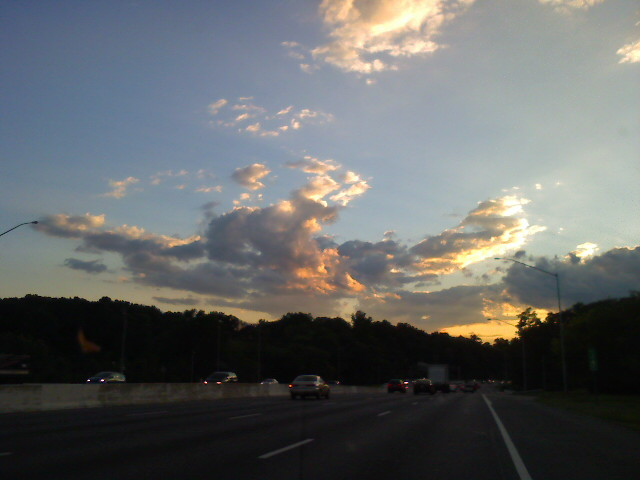
Kristina and I are heading to the Apple Store in the Montgomery Mall to pick up her iMac. It was in for repairs after frequently freezing up. I hope it is all better.
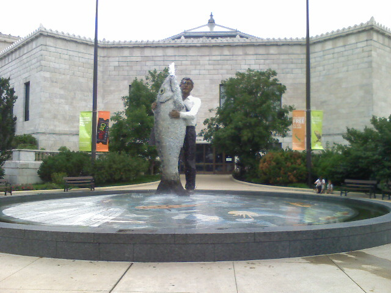
We’re visiting the Shedd Aquarium and while Kristina and I were walking to the main entrance we saw this hilarious statue featuring a man holding a giant fish that squirts water out of it’s mouth. The inside of the aquarium is just as neat. Now we are waiting for the dolphin show to start in the Oceanarium.
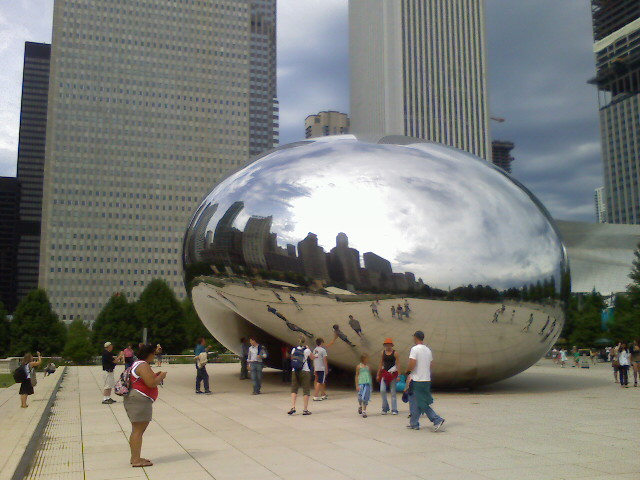
Continuing our whirl-wind tour of the windy city, Kristina and I visited Buckingham Fountain and The Bean. Lucky for us the rain cleared out and the sun came out which made for some fun pictures at the large reflective glob. Now it’s time to head to the Navy Pier so we can catch an architechture tour via boat and then some dinner.
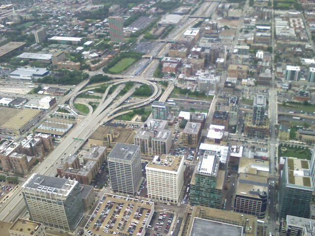
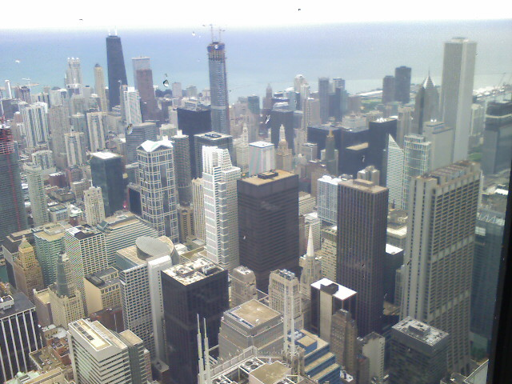
Kristina and I are being typical Chicago tourists. First we took in the view from the Sears Tower. The big buildings are seen facing north from the tower and the traffic structure is to the west. We’re eating lunch now at Salseria and then it is off to The Art Institute of Chicago.
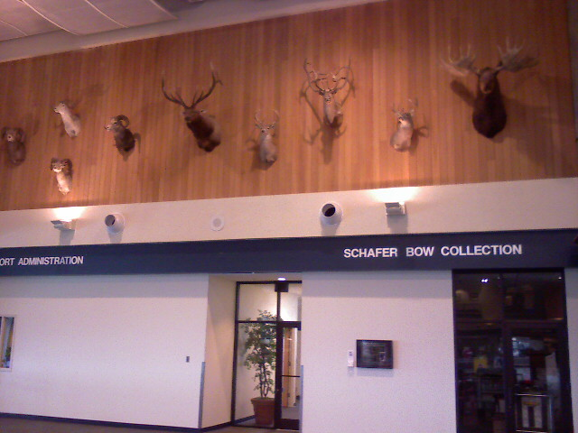
There are 16 animal heads and a Sacajawea statue here at the airport. I would expect nothing less from the Montana International Airport which only has 6 gates. Now Kristina and I are waiting for our flight to Chicago for two days before heading back to Maryland on Wednesday.
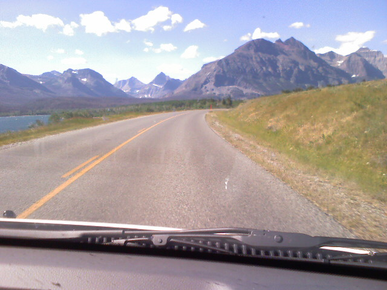
Today Kristina and I woke up early to head to Glacier National Park with her uncle Andre. It took us 3 hours to get there from Great Falls but it was well worth it. The mountains towered above us and some had snow on them. We made our way to the middle of the park at Logans Pass. It was windy and cold up there and we were only wearing shorts, t-shirts, and flip flops. As we slowly drove out of the park we stopped at scenic pull offs to take pictures and take in the view. Right now we are eating at The Curly Bear before heading home for the wedding rehersal and dinner.
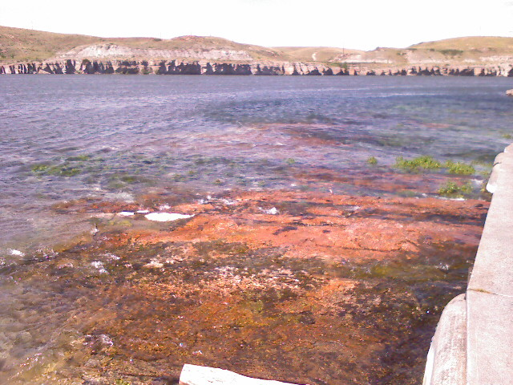
Kristina’s Uncle, Andre, took me around to see Great Falls while the girls decorated the church for the wedding on Saturday. We stopped at Giant Springs State Park which is right along the Missouri River. Even though the temperature was 92 today, the constant gentle breeze made it comfortable. The lack of humidity also helps.

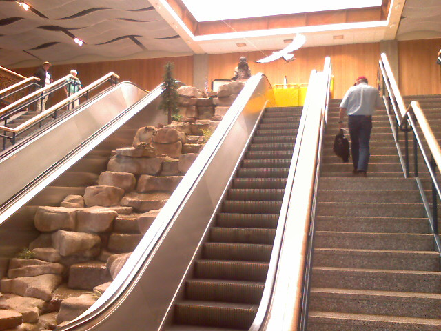
When we were up in the clouds I took this shot of the wing when we were somewhere between Denver and Great Falls. The inside of the Montana Airport was small and empty. There was a decorative mountain scene with a mountain lion, water fall and native american statue at the very top. Getting off the plane I saw a real native american but taking a picture of her would be rude.
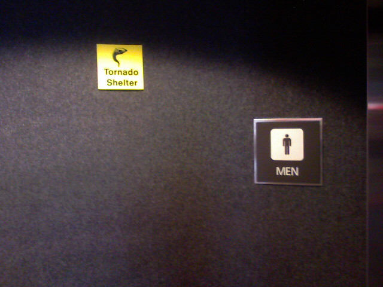
At Denver International Airport the mens restrooms also double as tornado shelters. Also, the free wifi here is not mobile friendly. First they make you scroll through 10 pages of legalese then they make you watch a 30 second commercial that is in a format unsuported by my phone. At any rate, onwards to Great Falls, Montana.